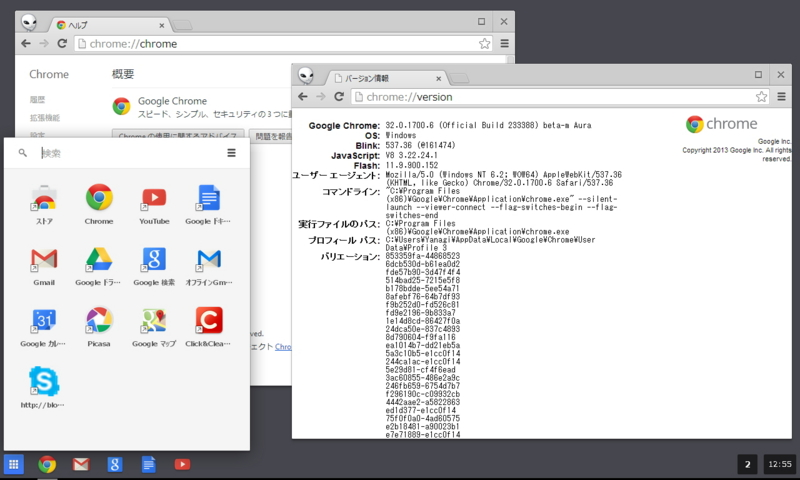
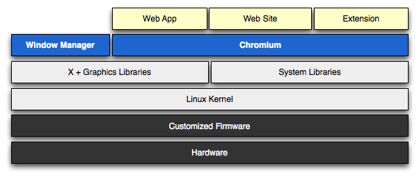
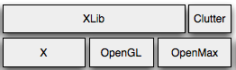

Google Chrome 32 with Aura
執筆日時：

米Google Inc.は11日（現地時間）、Webブラウザー「Google Chrome」の最新ベータ版v32.0.1700.6を公開した。「Google Chrome 32」は“Aura”プロジェクトの成果が盛り込まれた最初のバージョンとなっている。
割りと古いドキュメントを参照しちゃったみたいで（読みながら薄々「ちょっと古い？」とは感じていたのだけど）、少しお叱りを受けちゃった。
URLむむむむむ。いまだにChromeOSがgtkで作られてると思ってるのかこの人。
2013-11-12 17:54:10 via web
図とかからして、そもそものauraプロジェクト発足時のドキュメントをもとに記事書いてんのかな。URLこれかな。ちょっと情報が古すぎるね。
2013-11-12 17:57:35 via web to @jmuk
まぁ、ソースコードにも目を通さずにテキトーなことを書いてしまったのは申し訳ない。なんせ、執筆時間を無限にとるわけにもいかず……*1。
そもそも自分は Chrome OS のことよくわかっていないのだけど、もう GTK はとっくに排除されて Chromium そのものがユーザーインターフェイスを司っているという理解でいいのかな。

よく見かけるのはこんな図（Software Architecture - The Chromium Projects）で……

グラフィックス部分はこんな感じになっているのだそうだ。
URLちなみAura自体はデスクトップモードのウィンドウでも使われます．ほんと，コード的には大変更．"Immersive"モードの奴はAura Shell (ash)と呼ばれているもので，Auraの上に作られた派生コンポーネントですな．
2013-11-12 17:45:04 via web
あとこんな指摘も（いつもお世話になってます。落ち着いたらランチの約束を果たしたい）。これでやっとこさ Aura がなんなのか、概要がつかめた気がする。
まぁ、おとなしく「どのタブで艦これしているのかすぐわかる！」みたいな内容にしておけばよかったのだけどわりと大がかりな変更で、「これはさぞなかのひと大変だったろうなぁ」と感じられたので、少し踏み込んだものにしておきたかった。おかげで記事までベータ版みたい内容になってしまったが（死）、フィードバックが得られたのはとても嬉しいし勉強になる。正式版リリースの記事ではもう少しまともなものにしたい。
*1:来るって知ってたんだから勉強しとけよって感じなんだけど、ちょっと最近いっぱいいっぱいなもので